第１回 双龍武道大会 を開催しました
強く！ 美しく！ 輝け！
６月１４日、鹿児島県南大隅町の南大隅町体育館に於いて、記念すべき 第１回 双龍武道大会 を開催いたしました。ご参加いただいた門下生の皆様、そしてお力添えくださったすべての皆様、誠にお疲れ様でした。
出場した門下生一人ひとりが、日頃の稽古の成果を存分に発揮し、互いの技を讃え合う一日となりました。第１回の開催にあたりご尽力いただいた皆様に、改めて感謝申し上げます。楊心門は、これからも総合武術の道を歩み、さまざまな挑戦を続けてまいります。今後ともどうぞよろしくお願いいたします。
昨年、楊心門は創立１２年を迎え、１３年目に入りました。今大会は組手試合を実施せず、形（かた）※定められた一連の技を演武する稽古法・棒術※六尺棒を用いた武器術・杖術※杖（じょう）を用いた武器術・ヌンチャクの各個人戦と、棒・杖による団体戦という多種目にて実施いたしました。
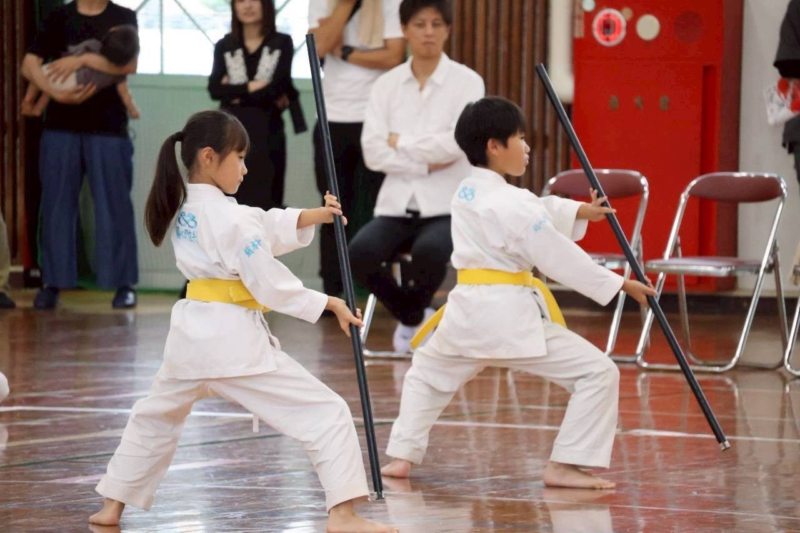
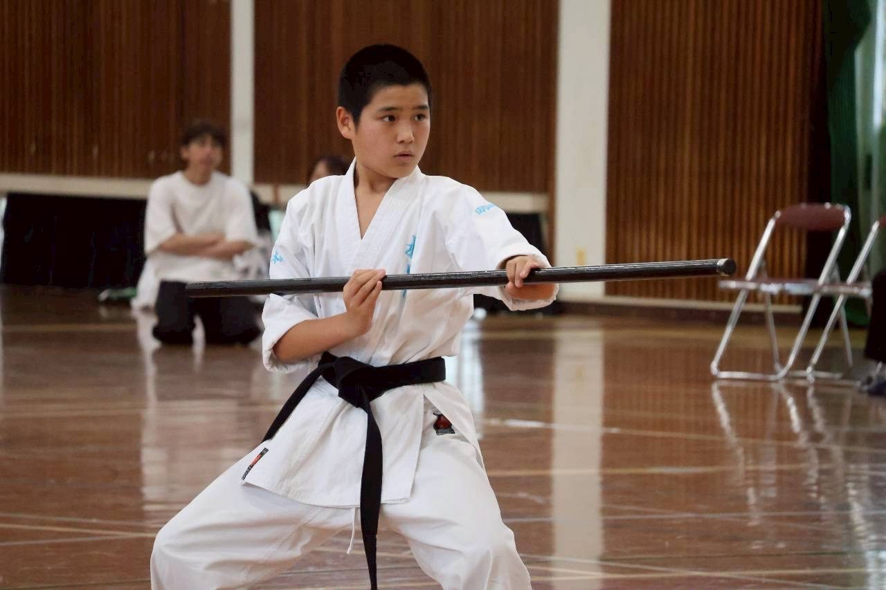
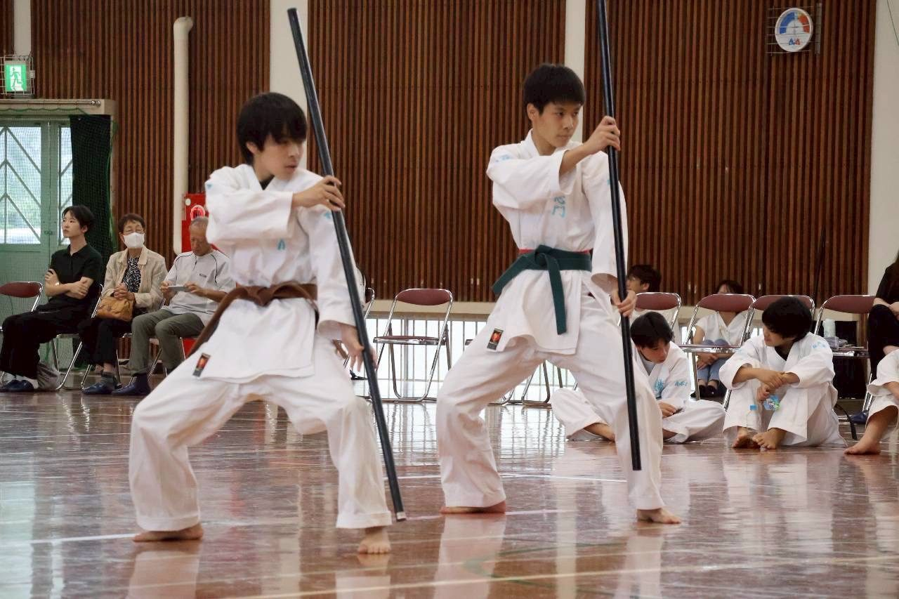
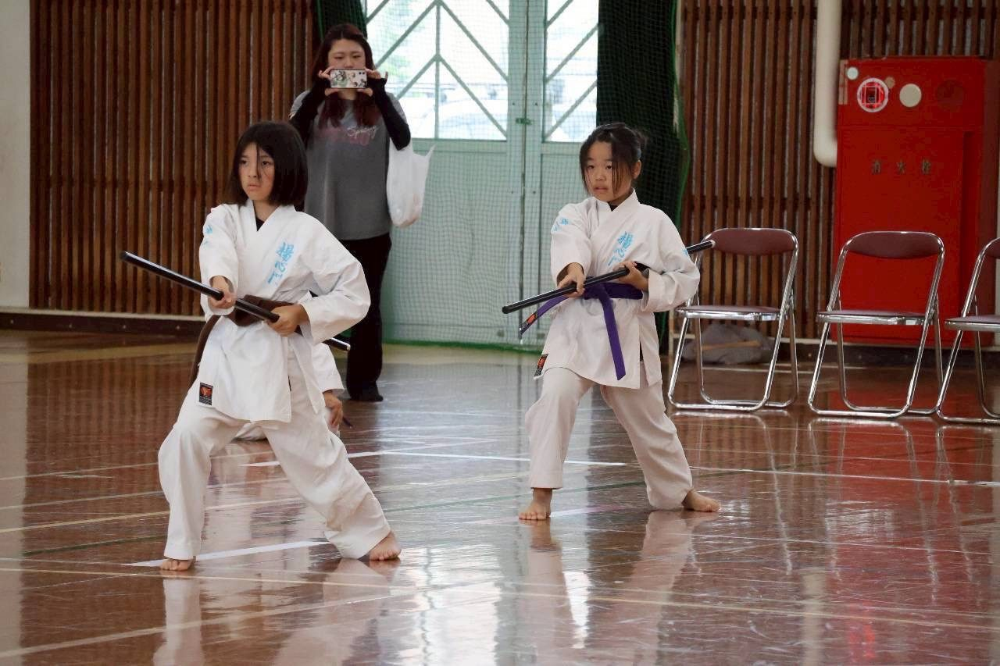
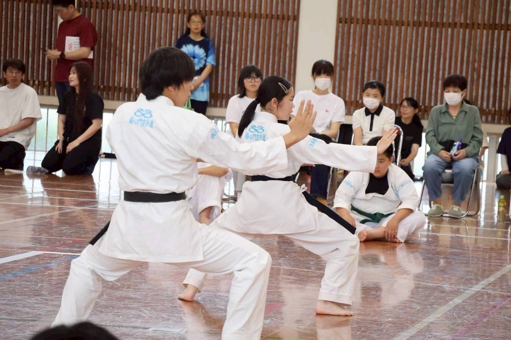
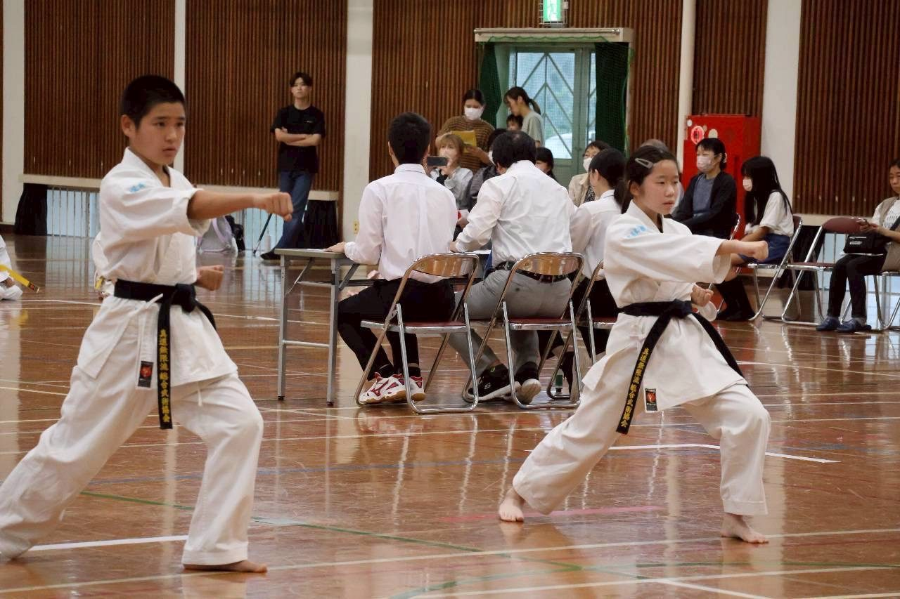
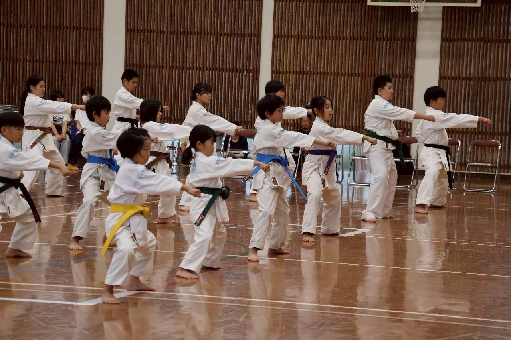
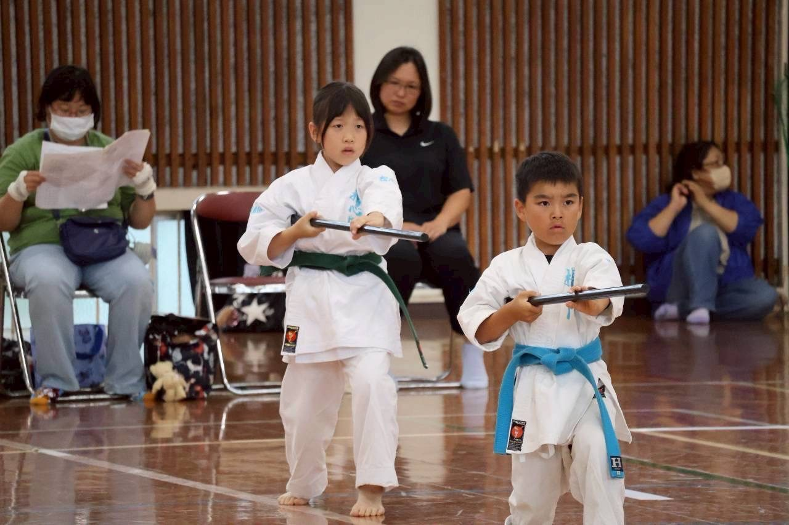
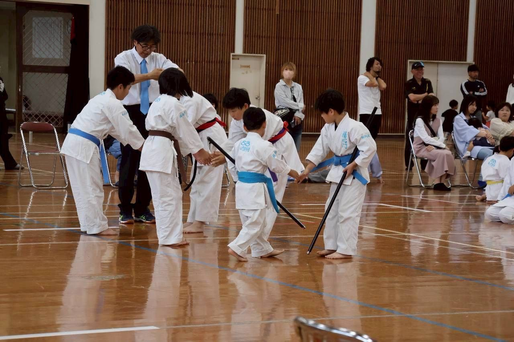
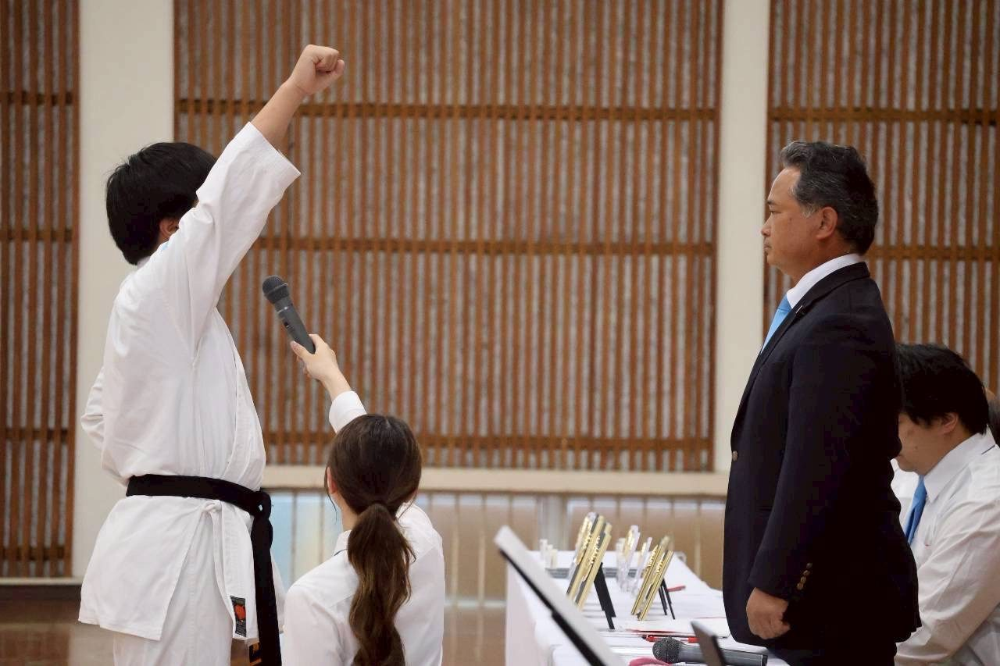
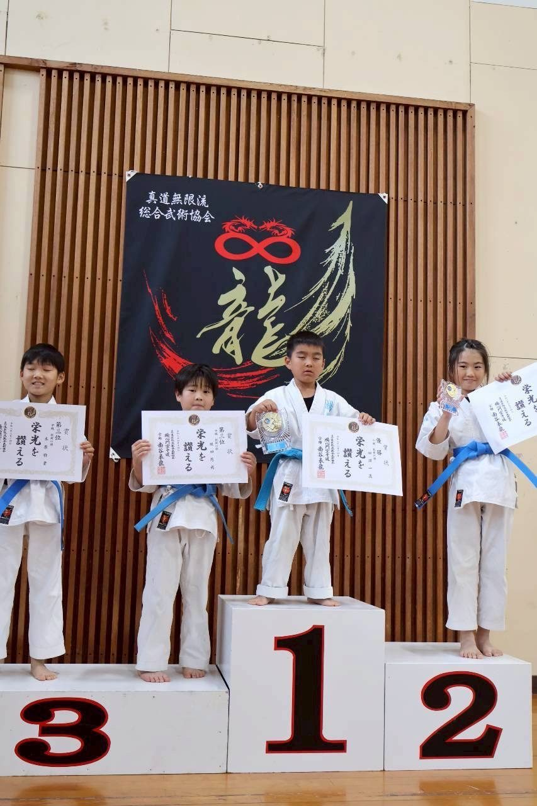
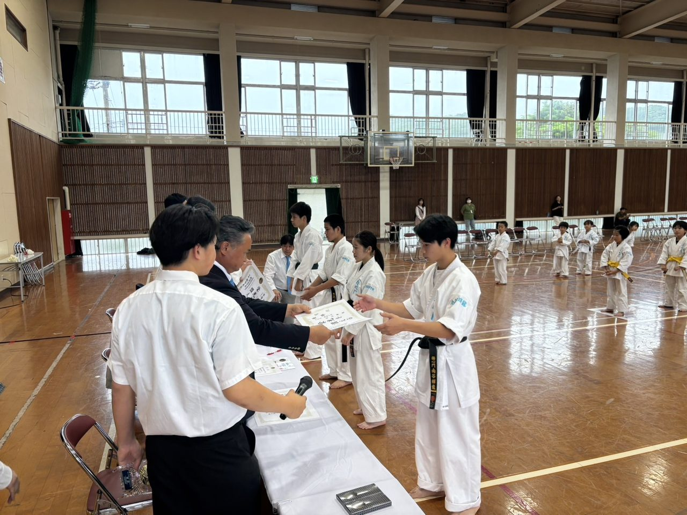
その人に合った技術を、自らを守る術に
組手が得意な生徒、苦手な生徒がいます。形や武器法が得意な生徒もいます。楊心門は、その人に合った技術 を修練し、自らを守れる術を学んでほしい。総合武術を謳う楊心門空手道として、今後もいろいろなことに挑戦してまいります。